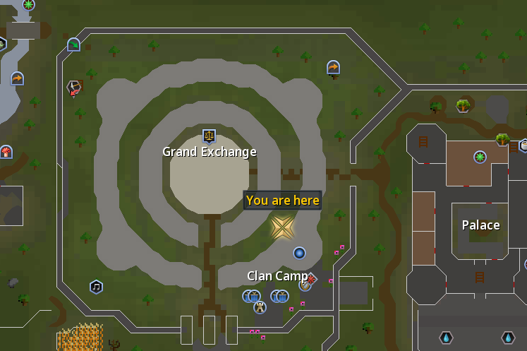
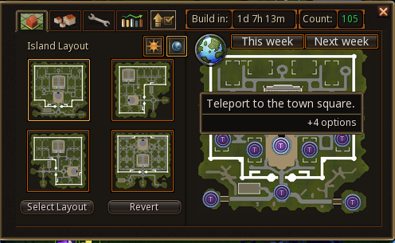
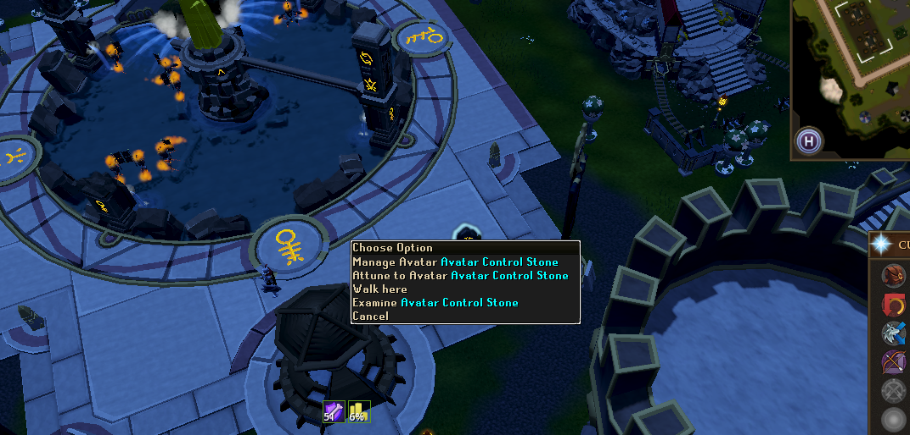
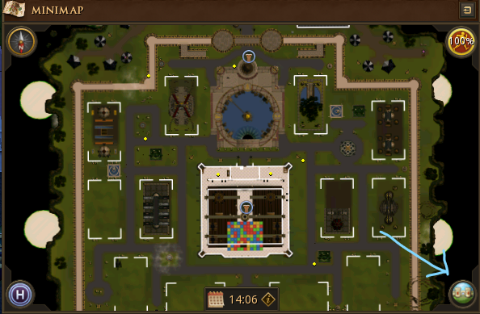
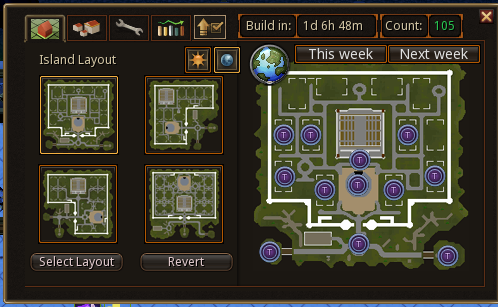

1
Get to the Citadel
Travel to the Clan Citadel and enter through the portal.

Head south-east from the Grand Exchange towards the Clan Camp.
Clan Guide
New to capping? No problem. Follow the steps below and you'll be done in no time.
Go to the Citadel, activate your boost, skill until you hit your weekly cap, claim your rewards, and let us know you're done.
Travel to the Clan Citadel and enter through the portal.

Head south-east from the Grand Exchange towards the Clan Camp.
Once you're inside the Citadel, open the Citadel map and teleport to the town square.

Use the Citadel map to teleport straight to the town square.
At the town square, find the Avatar Control Stone. Right-click it and select Attune to Avatar.

Right-click the Avatar Control Stone and choose Attune to Avatar.
Look to the right of your minimap and click the icon the arrow is pointing to below.

Click this icon to open the Citadel map.
You'll now see the Citadel map. The purple T icons are teleport points around the Citadel. Use these to quickly get to the skilling plot you want.

Click a teleport point to quickly travel around the Citadel.
Keep skilling until you've collected 2,350 resources.
This usually takes around 15–30 minutes depending on the plot and how actively you're playing.
Return to the Avatar Control Stone and choose Attune to Avatar, then select Skilling XP Bonus.
Visit the Quartermaster in the Citadel keep. Right-click Claim XP and choose the skill you want to receive bonus XP in.
If your RuneMetrics profile is public, your cap may be logged automatically.
If you don't appear in the log, post in #citadel-cap so we know you've completed it.
Capping gives you an XP boost that can help while training throughout RuneScape.
Capping each week increases your Fealty, up to Rank 3, which improves your Citadel XP rates.
You can claim additional XP from the Quartermaster after capping.
The resources you gather help maintain and improve the Clan Citadel.